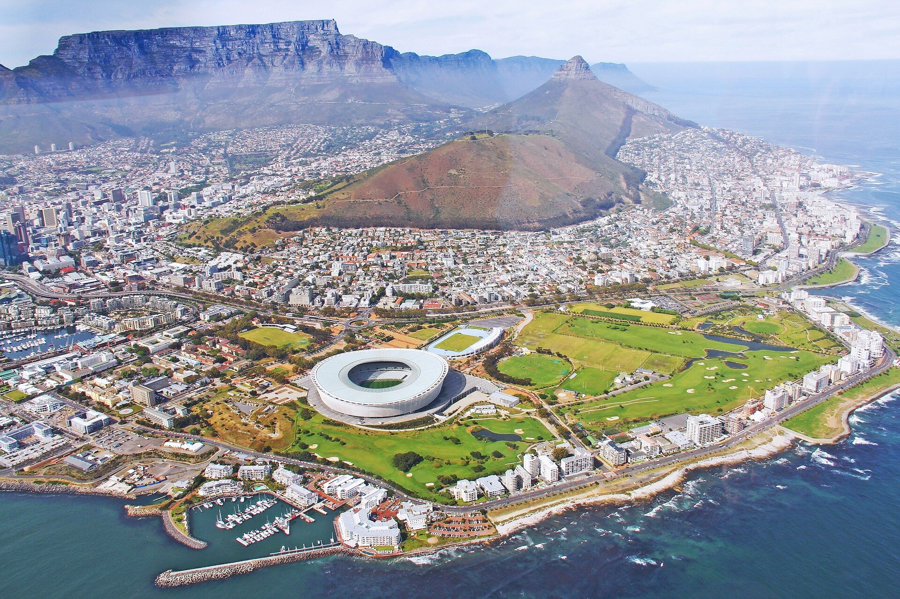
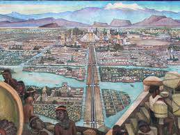
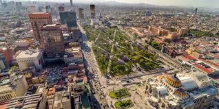
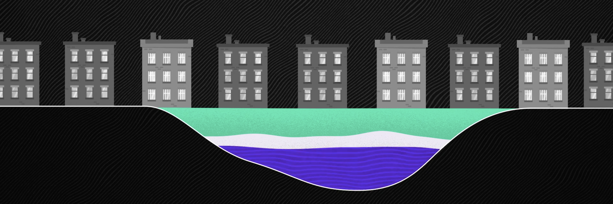
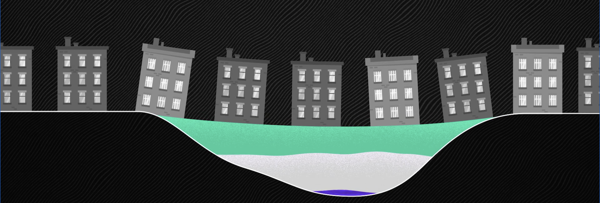

what will the new world look like?
Turn on a faucet and clean water rushes out As much as we want anytime we want. It is easy to forget that the quest for this has been one of the defining struggles of human history. Civilization that harnessed water thrived the ones that failed...fell. Today, seven in ten people on earth can count on having running water in their homes , At least so they think.
Cape Town is the first major city in the world to plan to indefinitely shut off its water supply. For million people would stop getting running water. They’d get water rations , and they’d need to line up at city water stations to get it. And it’s not just Cape Town , São Paulo , Melbourne , Jakarta , London , Beijing , Istanbul , Tokyo ,Bangalore , and Barcelona .
Mexico City will all face their own Day Zero in the next few decades , unless their water use radically changes. In fact, by 2040 most of the world not have enough water to meet demand year - round. There is no substitute for water. Each of us will die in just a few days without it. How have we built a world where we donot have enough of most valuable resources? And as this crisis grows , what will the new world look like? 
Earth is the blue planet. There is no shortage of water. We have 326 million trillion gallons of it. Always have,always will. Water my freeze into ice or evaporate into air, but it doesnot leave our planet. But 97% of it is salty and 2% is trapped in ice at the poles, so all of humankind relies on just 1% of that water to survive. And the answer depends a lot on where you live. Kuwait is one of the poorest countries in terms of water per capita , and Canada , one of the richest, doesn’t have twice as much or even ten times as much. It has 10,000 times as much. But it also matters where the water is. That 1% of Earth water that we all rely on, most of it is underground and really difficult and expensive to get to , so humans have mostly settled close to surface water,like rivers and lakes. Around 90% of the world’s population lives less than ten kilometers from freshwater source.
Hundreds of years ago, when the Azteces settled on what is now Mexico City , they saw a giant lake. When the Spanish came in the 16th century, one soldier marveled at the Aztec city rising from the water that seemed like an enchanted vision. But then the spanish started draining the lake, and over the next few centuries that space was filled by people. Like in most places, surface water in Mexico was treated as a public resource, key to development. And since 1950, Mexico City’s population has exploded. It’s now home to 22 million people. 
Mexico City gets more rain than notoriously rainy London. But the lakes that would have collected that water are long gone,so the city floods. But they still need to pipe in most of their water from other parts of Mexico. Or they pump it from underground. Thanks to God We’ve gotten a lot better at accessing groundwater. But there’s a catch. 
Those water deposits , called aquifers, have accumulated over two thousand years, and it takes two thousand years to fill up again. Sucking up that Groundwater has another side effect. It compresses the soil, Mexico City literally sinking . In some places , as much as nine inches a year  
NASA satellite data shows that aquifers in northern India decreasing by 29 trillion gallons in one decade. This century, water consumption has increased sevenfold. The rain and snow that we count on to water crops and refill lakes and rivers is getting less reliable.
"BY Explained - The world's Water Crisis - "
layan - fatima - gadeer